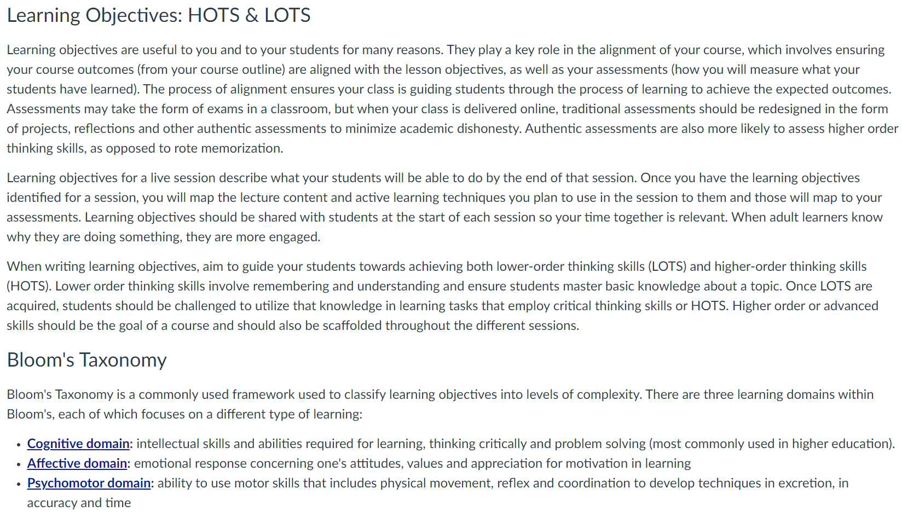
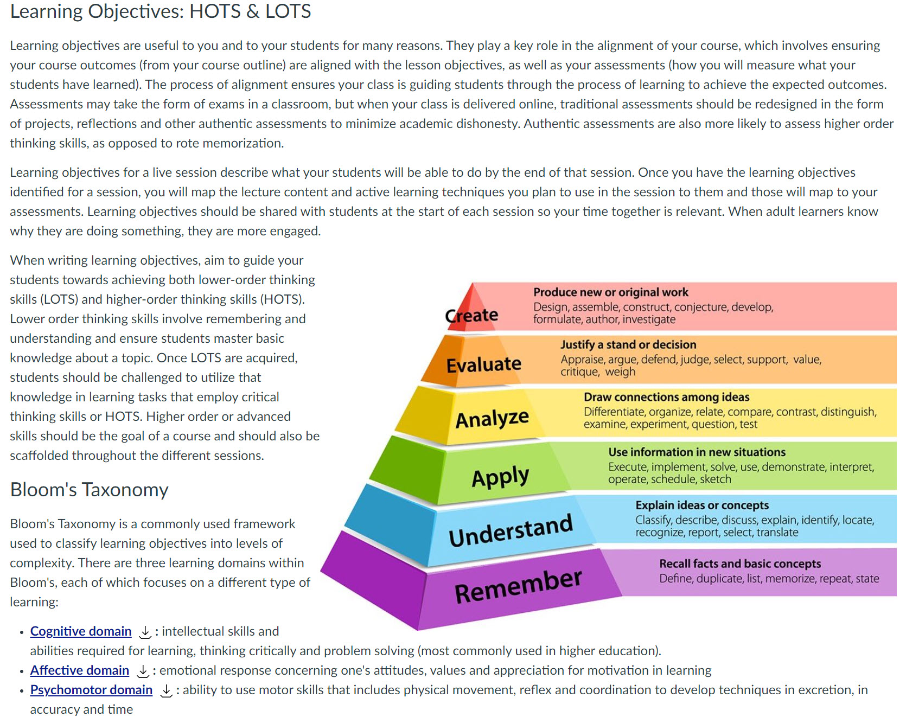

Use a combination of words and graphics to connect concepts and add visual interest.
(Clark & Mayer, 2016)
It can help students to visualize the content in various ways.
The image below is a screenshot of a page that is purely text without a visual representation of the information.
Hover over or tap the screenshot below to see the difference when a graphic is added.
 Bitmoji graphic is from the Bitmoji Chrome extension.
Clark, R., & Mayer, R. (2016). e-Learning and the science of instruction: Proven guidelines for consumers and designers of multimedia learning. Pfeiffer.
The screenshots on this page were adapted from the content originally from the Introduction to Live Online Teaching & Learning course by CVC-OEI is licensed under a Creative Commons Attribution 4.0 International License. Development of this material was funded by a grant from the California Community Colleges' Chancellor's Office.